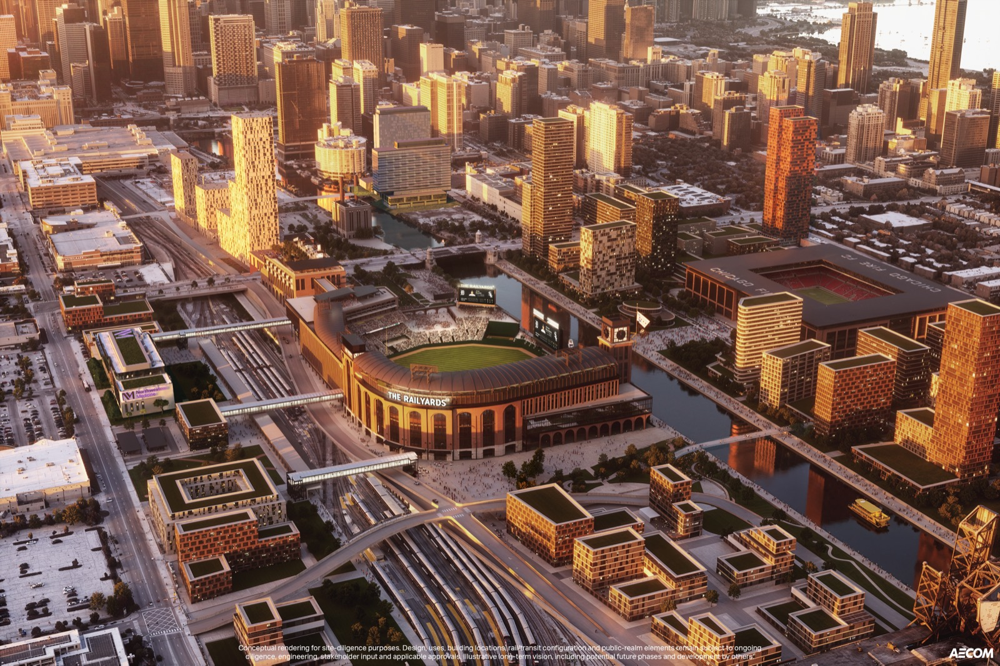
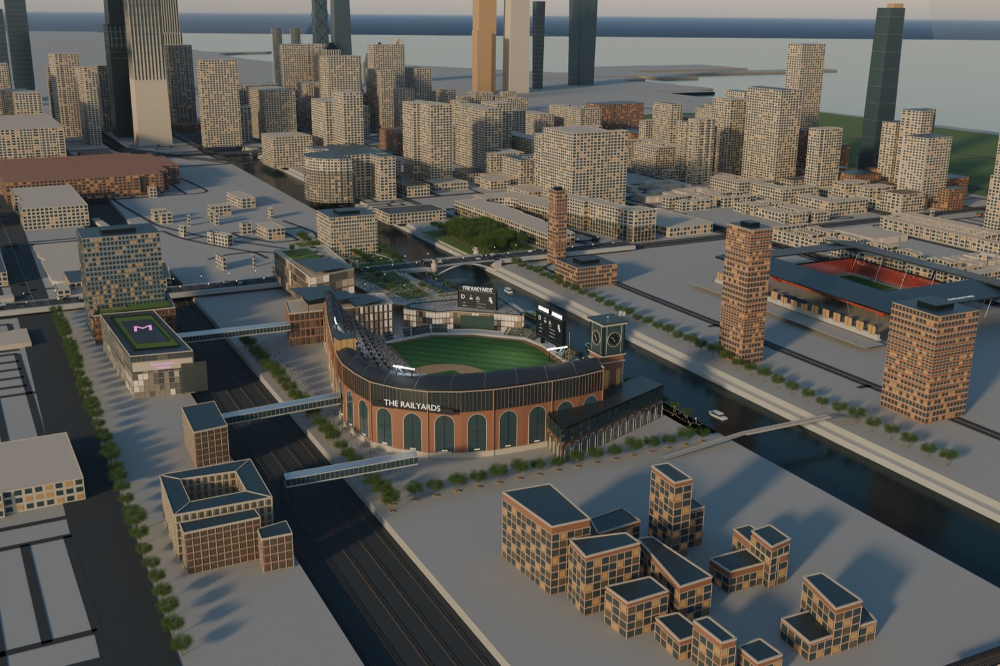
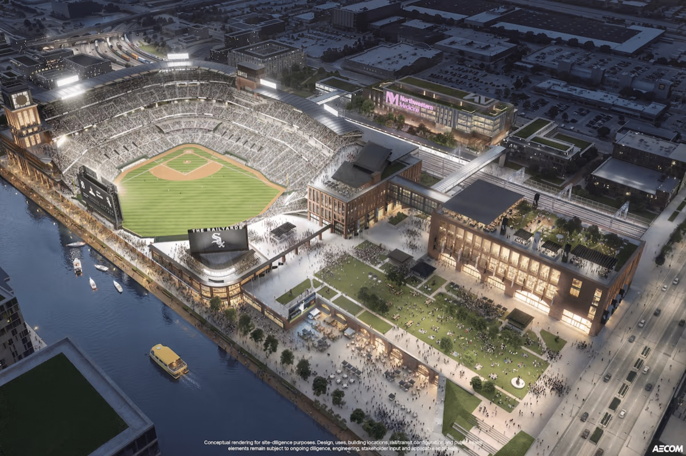
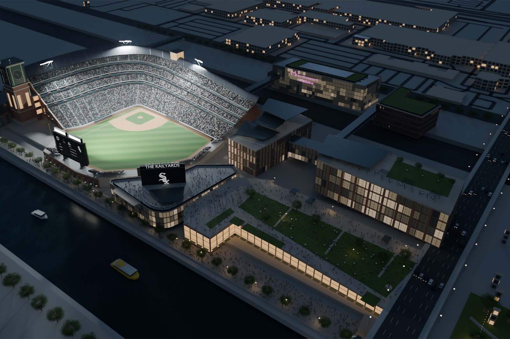
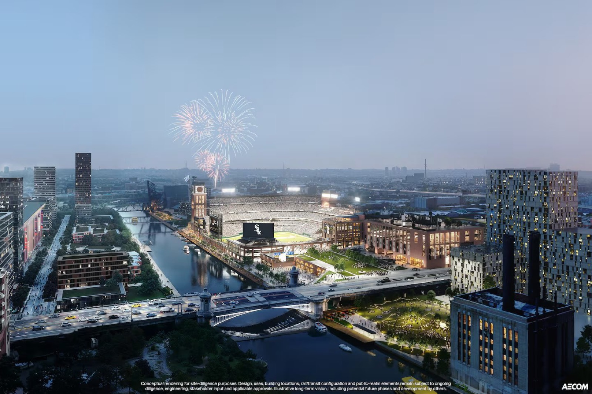
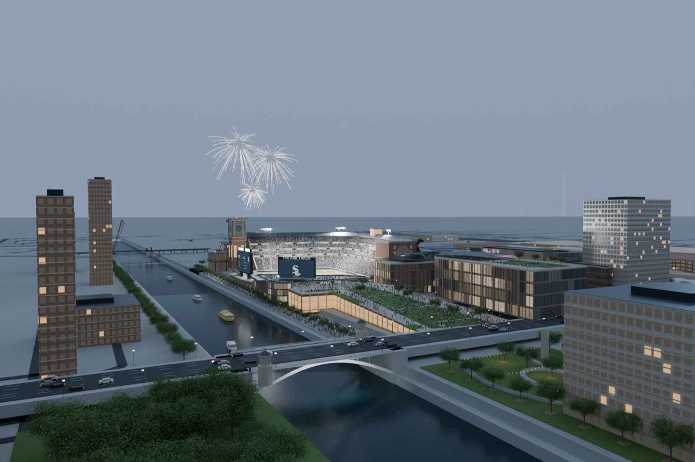
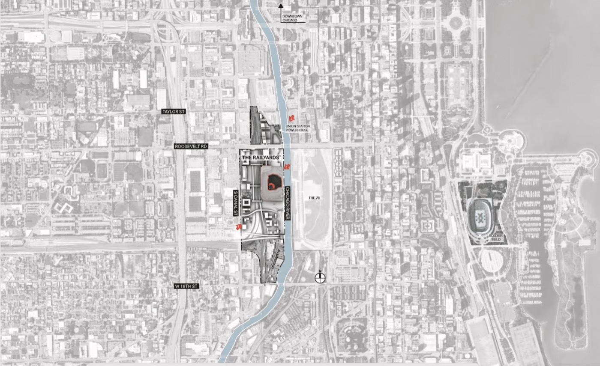

For each released picture the model has a camera solved to the artwork's own perspective. Left is AECOM; right is Blender through that camera. Differences are where the model is wrong or unfinished, and they are meant to be visible.
Drag the handle. Left of it is AECOM's picture; right of it is the model through the same solved camera. The buttons swap the model between the current V4 and the earlier V3 and V2 stages, so you can see the reconstruction converge.
South aerial, afternoon


<>
AECOMModel
Slider. Same camera; AECOM at left of the handle, model at right. The lake, the board at the river edge and the tower junction are V4 changes; the future towers across the river are AECOM's own illustration kept as a separate layer.
AECOM. The south aerial: the arched brick river face, clock tower, right-field board at the river, the soccer stadium and towers across the river, the Loop and lake beyond." loading="lazy">AECOM. The south aerial: the arched brick river face, clock tower, right-field board at the river, the soccer stadium and towers across the river, the Loop and lake beyond.Model. Camera fitted to the same picture. The lake now sits top right where AECOM has it; the board is at the river edge beside the tower; the towers across the river are a labelled future-development layer." loading="lazy">Model. Camera fitted to the same picture. The lake now sits top right where AECOM has it; the board is at the river edge beside the tower; the towers across the river are a labelled future-development layer.
North aerial, dusk


<>
AECOMModel
Slider. The first picture most people saw. The park grade, outfield entry above the bleachers and the lower riverwalk follow the artwork; the field, seats and boards are native geometry.
AECOM. The north aerial, the view most people saw first: bowl, raised park, Northwestern Medicine building, riverwalk and the board over the bleachers." loading="lazy">AECOM. The north aerial, the view most people saw first: bowl, raised park, Northwestern Medicine building, riverwalk and the board over the bleachers.Model. Same camera. The park grade, the outfield entry above the bleachers and the lower riverwalk follow the picture; the field, seats and boards are native geometry." loading="lazy">Model. Same camera. The park grade, the outfield entry above the bleachers and the lower riverwalk follow the picture; the field, seats and boards are native geometry.
From the Roosevelt Road bridge


<>
AECOMModel
Slider. Twilight from the bridge; fireworks are staged for this view only, as in the artwork.
AECOM. Looking south from the bridge at twilight, fireworks over the bowl." loading="lazy">AECOM. Looking south from the bridge at twilight, fireworks over the bowl.Model. Same camera. Bridge deck, tender houses, the park and its lawn, the retail under the deck, the tower and board beyond." loading="lazy">Model. Same camera. Bridge deck, tender houses, the park and its lawn, the retail under the deck, the tower and board beyond.
Site plan vs the model's map

AECOM site plan. Roosevelt to 18th, Canal Street to the river, Soldier Field and the lake at right." loading="lazy">AECOM site plan. Roosevelt to 18th, Canal Street to the river, Soldier Field and the lake at right.Model, orthographic, north up, 5.2 km. Mapped streets and buildings, the river, the stadium, Grant Park and Museum Campus lawns, and the USGS shoreline with Northerly Island and the harbours.
Reading the differences
The bowl outline, canopy, tower position, board positions and the park edge are traced from these pictures. Materials, crowd, planting and the boards' graphics are approximations. Buildings across the river and the soccer stadium are AECOM's own future-phase illustration and are kept as a separate layer that the north view hides, exactly as the north artwork does.